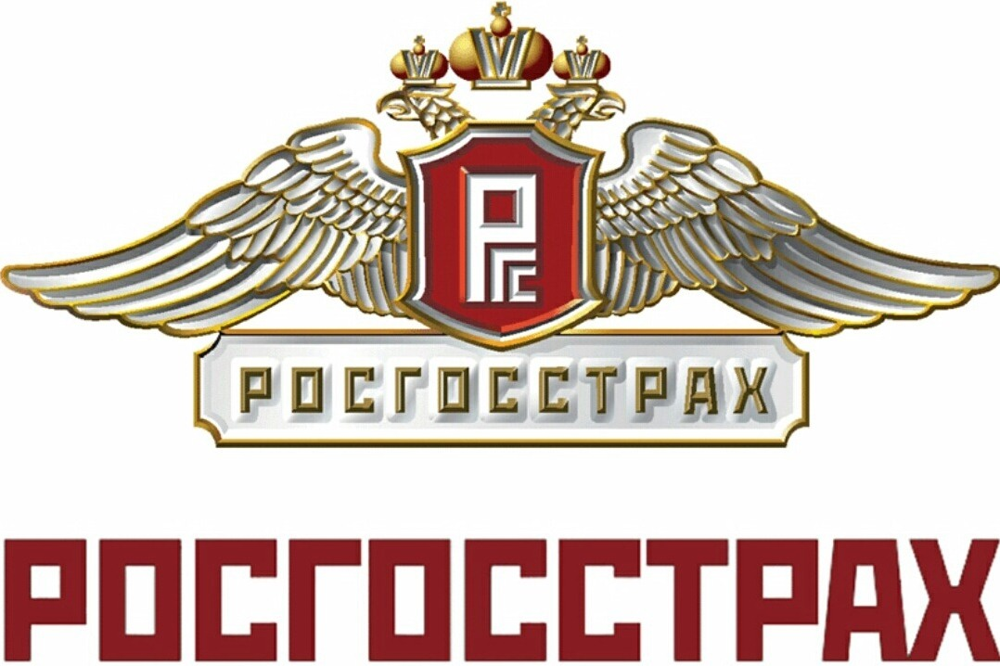

Преподаватель: Горин А. В.
Студент: Темергалеева Н. А.
Лектор: Жмак Е. И.
История крупнейшей
страховой компании
РФ – «Росгосстрах»
Трудимся более 100 лет, чтобы
вы чувствовали себя под надежной защитой

Система страхования играет важную роль в экономике страны в целом и ее граждан в частности.
Промышленная деятельность, предпринимательство, жизнь, здоровье и имущество граждан подвергаются постоянным рискам,
которые никуда не исчезают, а скорее становятся все более актуальными. Выбирая компанию, заинтересованные
лица ориентируются уже не на броские названия и громкие лозунги, а на их опыт, надежность и стабильность.
Одной из таких организаций является Росгосстрах, история которой насчитывает уже почти век работы в самых разных,
а порой и невероятно сложных условиях. Сегодня это несомненный лидер в сфере страхового бизнеса, неизменно занимающий верхнюю
строку во всех существующих рейтингах.
О страховой компании «Росгосстрах»

В наше время «Росгосстрах» — это крупнейшая страховая компания России по объемам сборов, выплат, собственных средств, количеству представительств и занятого персонала. Подобный успех возник не внезапно и не сразу, для его достижения было потрачено сто лет развития, становления, опытов и экспериментов. Вместе с достижениями были и неудачи, граничащие с банкротством, но все это осталось позади, а приобретенный опыт бесценен.
Крупнейшая страховая компания России «Росгосстрах» (РГС) по определению в организационно-правовой форме является публичным акционерным обществом (ПАО). Среди клиентов финансовой структуры государственные и коммерческие организации, частные предприниматели, практически все категории физических лиц.
Сфера охвата клиентов распространяется на добровольные и обязательные виды страхования. Право на проведение деятельности на территории РФ и за ее пределами предоставлено лицензиями Центрального Банка, выданными в 2018 году и действующими по сегодняшний день.
50 000
профессионалов в компании
профессионалов в компании
140
офисов урегулирования
офисов урегулирования
>100
лет работы на рынке страхования
лет работы на рынке страхования
>12 900 000
клиентов под надежной страховой защитой
клиентов под надежной страховой защитой
>1500
точек продаж и обслуживания клиентов
точек продаж и обслуживания клиентов
История ПАО СК «Росгосстрах»
Если следовать юридической и финансовой хронологии, то датой основания компании логично считать 6 октября 1921 года,
когда был подписан декрет об основании страхового дела. Госстрах СССР был объявлен монополистом и ему были переданы
в подчинение с последующим поглощением все коммерческие фирмы, действующие в стране на тот момент.
Изначально под защиту бралось сельскохозяйственное имущество в частных и коллективных хозяйствах — недвижимость,
животные и урожай. По мере роста благосостояния населения страны были введены такие направления страхования, как жизнь,
здоровье и частная собственность. Благодаря грамотно организованной пропаганде граждане страны активно покупали полисы,
а прибыль компании была настолько высокой, что являлась отдельным пунктом в бюджете Советского Союза.
Распад СССР в 1991 году затронул все сферы ее деятельности, не оставив в стороне и «Росгосстрах». Компания прошла трудный,
но не трагический путь распада и возрождения, сохранила кадры, активы, недвижимость, средства, а самое главное — многолетний опыт.
Руководители и собственники
Руководители и собственники «Росгосстрах» группы перешли банку ФК «Открытие».
В связи с этим были расторжены договора с президентом ПАО РГС Данилом Хачатуровым и генеральным директором Дмитрием Маркаровым.
В последствие пост президента занял Николаус Фрай, а в 2020 году его сменил Геннадий Гальперин, находящийся на должности по сегодняшний час.
Деятельность компании
«Росгосстрах», являясь крупнейшей страховой компанией России принимает участие практически во всех крупных проектах и программах мирового и
государственного уровня. Как один из наиболее популярных примеров акций российского масштаба — официальное спонсорство над чемпионатом
страны по футболу в период 2006-2010 и 2015-2018 годов. Это было вложение не только в спорт и здоровье нации, но и отличный маркетинговый ход,
принесший компании дополнительную известность и привлекательность.
«Росгосстрах» предлагает физическим и юридическим лицам все страховые услуги, которые предусмотрены отечественным законодательством.
Что касается внутреннего устройства, то сотрудникам компании предоставляется полный социальный пакет, бесплатный медицинский полис, высокая зарплата по трудовому договору. Действуют центры подготовки и переподготовки, заключены договоры с медицинскими учреждениями. Сегодня работа в «РГС» считается одним из наиболее престижных мест в России.